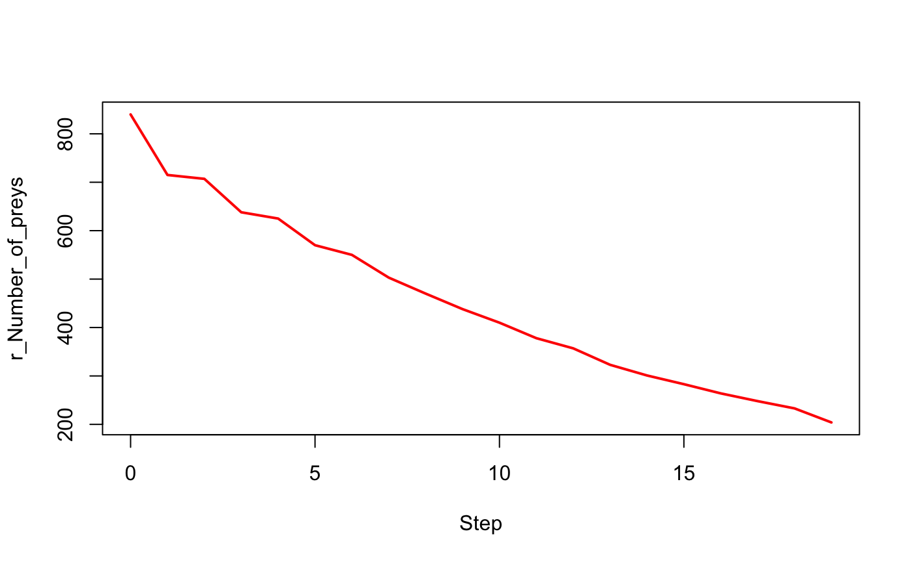
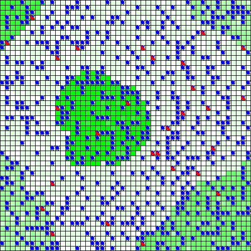

# install and load the package
#install.packages("devtools")
#devtools::install_github("r-and-gama/gamar")
library(gamar)
#> Welcome to gamar v0.0.1!
#> GAMA platform needs to be installed on your machine.
#> See http://www.gama-platform.org for more instructions about GAMA.
#> -- note that GAMA platform was found at /Applications/Gama.app
#> Gama configuration succeed!
# if necessary to configure GAMA path
# defpath("/Applications/Gama.app")# Load an experiment
exp <- load_experiment("prey_predator",
system.file("models/predator_prey/models",
"predator_prey.gaml", package = "gamar"))
#> Loading experiment "prey_predator" from file "predator_prey.gaml"...
#>
#> Periods of observation ("obsrates") are converted into integers.
#>
#> Final time step ("tmax") is converted into integer.
#>
#> Seed is converted into numeric.
#>
#> Parameters' types are cast according to model definition
#>
exp
#> Experiment with 1 simulation of 14 parameters and 5 observed variables
#> experiment name: prey_predator
#> input gaml file: /Library/Frameworks/R.framework/Versions/3.5/Resources/library/gamar/models/predator_prey/models/predator_prey.gaml
#> model parameters: p_Initial_number_of_preys_, p_Prey_max_energy_, p_Prey_max_transfert_, p_Prey_energy_consumption_, p_Initial_number_of_predators_, p_Predator_max_energy_, p_Predator_energy_transfert_, p_Predator_energy_consumption_, p_Prey_probability_reproduce_, p_Prey_nb_max_offsprings_, p_Prey_energy_reproduce_, p_Predator_probability_reproduce_, p_Predator_nb_max_offsprings_, p_Predator_energy_reproduce_
#> observed variables: r_Number_of_preys, r_Number_of_predators, r_main_display, r_info_display, r_Population_information
#> Experiment overview:
#> p_Initial_numbe… . . . p_Predator_ener… r_Number_of_pre… . . .
#> 1 200 . . . 0.5 1 . . .
#> r_Population_in… tmax seed output
#> 1 1 1000 1 NA
# to explore the parameters and the observed variables
parameters(exp)
#> p_Initial_number_of_preys_ p_Prey_max_energy_ p_Prey_max_transfert_
#> 1 200 1 0.1
#> p_Prey_energy_consumption_ p_Initial_number_of_predators_
#> 1 0.05 20
#> p_Predator_max_energy_ p_Predator_energy_transfert_
#> 1 1 0.5
#> p_Predator_energy_consumption_ p_Prey_probability_reproduce_
#> 1 0.02 0.01
#> p_Prey_nb_max_offsprings_ p_Prey_energy_reproduce_
#> 1 5 0.5
#> p_Predator_probability_reproduce_ p_Predator_nb_max_offsprings_
#> 1 0.01 3
#> p_Predator_energy_reproduce_
#> 1 0.5
obs_rates(exp)
#> r_Number_of_preys r_Number_of_predators r_main_display r_info_display
#> 1 1 1 1 1
#> r_Population_information
#> 1 1# to set the experiment
exp$p_Initial_number_of_preys_ <- 990L
exp$p_Initial_number_of_predators_ <- 100L
exp$p_Predator_probability_reproduce_ <- 0.1
exp$tmax <- 20L# to run the experiment
out <- run_experiment(exp, hpc = 2, display = TRUE)
#> if "display" equal TRUE, "save" is automatically set to TRUE.
#>
#> Outputs are saved to "/Users/mac/Desktop/gamar/vignettes" by default.
#>
#> Outputs are saved in " /Users/mac/Desktop/gamar/vignettes/prey_predator_1 ".
#>
#> Running experiment plan...# to visualize the output
with(out$output[[1]],
plot(Step, `r_Number_of_preys`, type = "l", lwd = 2, col = "red"))
